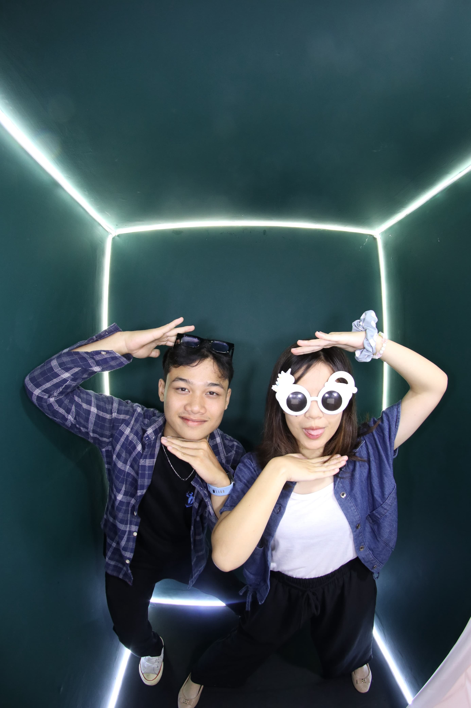

Happy Valentine
Untuk Tokoh Utama di Hidupku

Awal Cerita Kita ✨
Kenapa Harus Alyca?
Senyummu
Karena satu senyuman darimu cukup untuk merubah hari yang buruk menjadi hari terbaikku.
Kesabaranmu
Terima kasih sudah menjadi rumah yang paling sabar untuk segala keluh kesahku.
Tentang Kita
Karena bersamamu, hal-hal sederhana terasa seperti petualangan luar biasa.

Partner Ketawa Terbaik 😂
Surat Kecil
Dibuat dengan ❤️ dan Coding
Spesial untuk Alyca
Spesial untuk Alyca